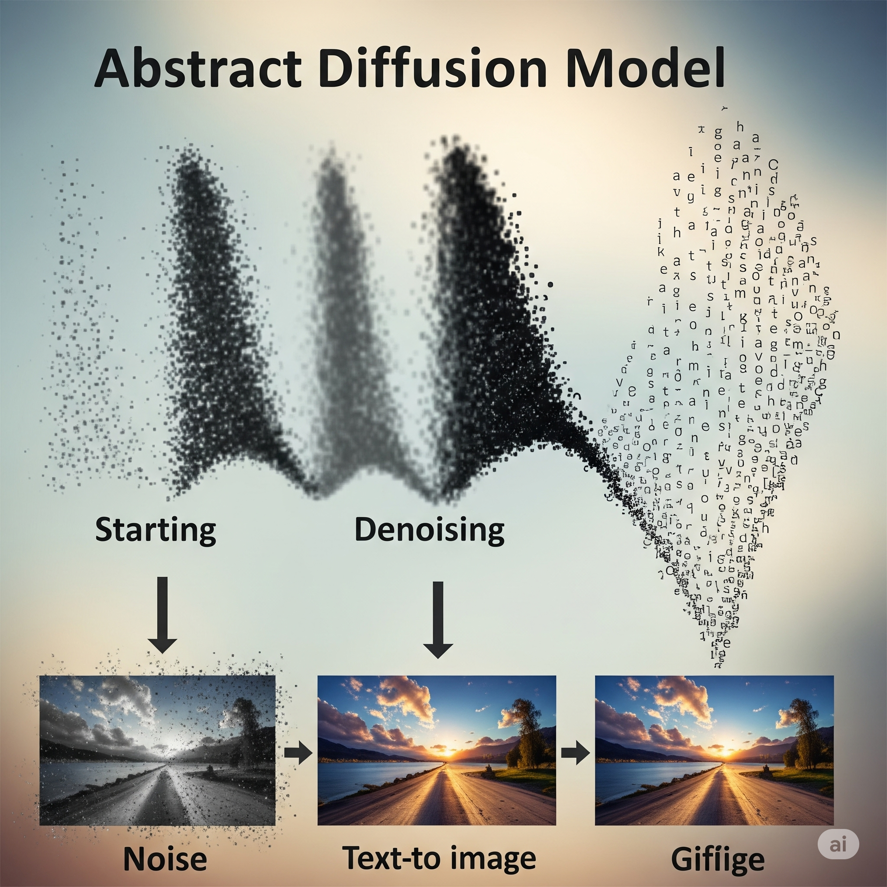

Diffusion Models in Image Generation

Diffusion models represent the latest advance in generative image AI, revolutionizing the way we create and manipulate digital imagery. Unlike previous generative models like GANs, diffusion models approach image generation as a denoising process.
How Diffusion Models Work
The core idea behind diffusion models involves two main phases:
- Forward Diffusion Process (Noising): In this phase, a small amount of Gaussian noise is progressively added to an image over several steps, until the image eventually becomes pure noise.
- Reverse Diffusion Process (Denoising): This is the generative part. The model learns to reverse the noising process, gradually removing noise from a random noise input to reconstruct a coherent and high-quality image. This is a step-by-step process where the model predicts the noise that was added at each step and subtracts it.
This iterative denoising process allows for incredibly detailed and diverse image generation, often surpassing the quality of previous generative models.
Advantages and Applications
Diffusion models offer several significant advantages and have found a wide range of applications:
- High-Quality Output: They are known for generating highly realistic and sharp images with fewer artifacts compared to GANs.
- Training Stability: Diffusion models are generally more stable to train than GANs, which can often suffer from mode collapse and training instabilities.
- Diversity of Generation: They can generate a wider variety of images, covering more of the data distribution.
- Text-to-Image Creation: This is one of the most popular applications, allowing users to generate images from simple text descriptions (e.g., "a cat wearing a top hat").
- Image Inpainting: Filling in missing or corrupted parts of an image seamlessly.
- Image Outpainting: Extending an image beyond its original borders.
- Image-to-Image Translation: Transforming images from one style or domain to another.
Emerging Tools and Models
The rise of diffusion models has led to the development of powerful and accessible tools:
- Stable Diffusion: An open-source latent diffusion model capable of generating high-quality images from text, image prompts, or modifying existing images.
- Midjourney: A proprietary AI program that generates images from natural language descriptions, known for its artistic and often surreal outputs.
- DALL-E 2: Developed by OpenAI, it can generate realistic images and art from a text description, and also combine concepts, attributes, and styles.
The field of diffusion models is rapidly advancing, with new techniques and applications emerging constantly. Their ability to generate incredibly detailed and diverse images from simple inputs marks a significant leap forward in generative AI, opening up new creative possibilities for artists, designers, and researchers alike.